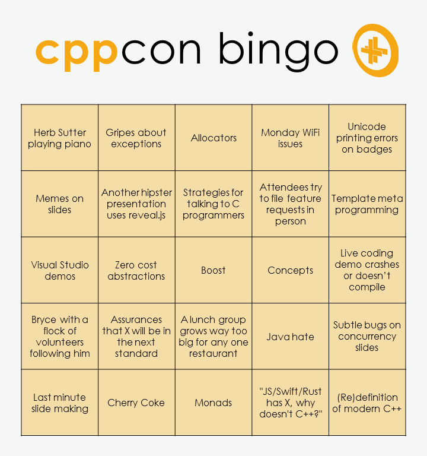

2019-09-12
https://devblogs.microsoft.com/cppblog/c20-concepts-are-here-in-visual-studio-2019-version-16-3/
https://www.reddit.com/r/cpp/comments/d2alin/c20_concepts_in_visual_studio_2019_version_163/
Eyal Guthmann (Dropbox): The (not so) hidden cost of sharing code between iOS and Android
It’s possible we could have done a better job at leveraging open source C++ libraries, but the open source culture in the C++ development community was (is still?) not as strong as it is in the mobile development community <...>
It seems like the real issue was that Dropbox lost all of their senior C++ engineers.
A bit of background for the unified call proposal
Based on real input from code and users, I reluctantly agreed that for compatibility reasons, x.f(y) and f(x,y) could not mean exactly the same. The only feasible way forward was to do a traditional lookup based on the syntax used, and then try the other syntax if the first one failed. Stability – backwards compatibility – is an important feature, overruling my desire for perfection.
P0131 Unified call syntax concerns
Also known as Golden Master Tests or Snapshot Testing (locking down current behaviour)
https://www.cleanqt.io/blog/crash-course-in-qt-for-c%2B%2B-developers,-part-1
https://blog.qt.io/blog/2018/10/12/modern-qt-development-top-10-tools-using/ https://www.reddit.com/r/cpp/comments/9njw5n/is_there_an_easytouse_gui_library/
https://www.cleanqt.io/blog/cmake-it-modern-using-c%2B%2B-and-qt,-part-1
https://blog.trailofbits.com/2019/08/26/wrappers-delight/
https://www.reddit.com/r/cpp/comments/cxxk4b/a_new_c_sqlite_wrapper/
The Reddit thread also includes a heated discussion on how to handle errors and if exceptions are a good thing (eyeroll).
Article by Anthony Williams
https://www.justsoftwaresolutions.co.uk/cplusplus/strong_typedef.html
https://github.com/anthonywilliams/strong_typedef
using transaction_id =
jss::strong_typedef<struct transaction_tag, std::string>;
bool is_a_foo(transaction_id id)
{
auto &s = id.underlying_value();
return s.find("foo") != s.end();
}https://www.cycfi.com/2019/07/photon-micro-gui/
http://cppcast.com/2019/07/robert-maynard/
http://dominikberner.ch/cmake-interface-lib/
https://github.com/bernedom/SI
Professional CMake: A Practical Guide, 4th ed., CMake 3.15 https://crascit.com/professional-cmake/ $30
This is a C++17 class library for using the Single Instruction Multiple Data (SIMD) instructions in modern microprocessors.
https://www.agner.org/optimize/blog/read.php?i=1013
https://github.com/vectorclass/version2 (Apache 2.0)
Manual https://github.com/vectorclass/manual/blob/master/vcl_manual.pdf
https://github.com/aras-p/ClangBuildAnalyzer
https://www.reddit.com/r/cpp/comments/cjrrwm/machine_learning_with_cpp/
https://devblogs.microsoft.com/oldnewthing/20190830-00/?p=102823
https://www.reddit.com/r/cpp/comments/cxi2xy/the_sad_history_of_unicode_printfstyle_format/


